AutoFlowBY HYPERZONE
System Operation Manual
AutoFlow 系统操作手册
面向 Dropshipping 海外小 B 客户开发场景，覆盖搜品、广告发现、店铺识别、客户筛选、AI 话术、半自动建联、报价准备及 FOP 移交。
01手册概览
本手册先解释 AutoFlow 的系统结构、责任边界和完整业务流程，再按页面给出操作步骤。建议首次使用者顺序阅读，熟悉后可通过左侧目录直接跳转。
核心目标
帮助业务员更快发现适合 Dropshipping 合作的海外店铺并建立有效联系。
一期重点
搜品、搜店铺、联系方式筛查、线索评分、AI 话术和人工审核建联。
二期预留
金蝶云苍穹 FOP 产品成本、物流运费、正式线索和商机接口。
当前能力状态
| 能力 | 状态 | 使用说明 |
|---|---|---|
| 登录、注册、权限控制 | 可用 | 普通用户和管理员权限分离。 |
| 关键词 / 图片搜客工作流 | 已实现 | 执行依赖 PipiAds API Key 与可用额度。 |
| Shopify 识别、清洗和线索评分 | 已实现 | 评分用于辅助排序，联系人仍需人工核验。 |
| 智谱 GLM 开发话术 | 已实现 | 依赖模型额度；所有话术必须人工审核。 |
| WhatsApp / Email 建联 | 半自动 | 系统打开渠道，业务员确认并真实发送。 |
| 报价草稿与版本 | 可用 | 可以录入阶梯价、目的国和包裹条件。 |
| FOP 实时成本、运费和正式 CRM | 二期预留 | 页面入口存在，但真实金蝶适配器尚未接入。 |
重要验收边界页面出现 FOP 按钮或报价矩阵，不表示已经取得真实产品成本或物流运费。正式报价必须以 FOP 接口返回及审批结果为准。
02产品定位与角色边界
AutoFlow 负责
- 产品关键词、图片和店铺发现工作流
- 广告证据、Shopify 检测和联系方式清洗
- 可解释线索评分和业务员快速筛选
- 智谱 GLM 话术草稿及人工审核
- 半自动外部建联和本地下一步行动
- 产品阶梯价与目的国报价条件准备
FOP 负责
- 正式线索、客户、商机和商机阶段
- 权威跟进记录和销售责任归属
- 商品资料、采购成本与价格政策
- 物流渠道和运费试算模型
- 订单、履约、物流、售后、财务和结算
- 正式报价相关审批与业务规则
角色职责
| 角色 | 主要操作 | 关键责任 |
|---|---|---|
| 外贸销售员 | 创建工作流、筛选线索、核验联系人、审核话术、发送建联、准备报价 | 保证联系对象、话术和状态回填真实准确。 |
| 销售主管 | 查看线索质量、建联进度、报价完整性和 FOP 移交状态 | 监督业务质量与异常处理。 |
| 系统管理员 | 账号权限、配置检查、兼容业务记录管理和运行排障 | 保护密钥、数据和管理员权限。 |
| FOP 业务人员 | 维护正式线索、商机、成本、运费、订单和后续跟进 | 维护正式业务记录的权威性。 |
03系统整体架构蓝图
AutoFlow 采用浏览器单页应用、NestJS 模块化后端和 PostgreSQL 持久化架构。所有第三方密钥仅保存在后端，浏览器不会直接调用 PipiAds、智谱或 FOP。
AutoFlow Runtime BlueprintBrowser → API → Domain → Data / Providers
用户与界面层
销售工作台Dashboard / Workflows / Leads
业务操作页Outreach / Quotes / Follow-up
Vue 3 SPARouter / Pinia / Tailwind CSS
双语与主题vue-i18n / 白色 / 黑色
↓ HTTPS /api/* · HttpOnly Session · Owner Scope ↓
应用与领域层
认证与用户Auth / Users / Admin guard
工作流编排Workflow executor / Job worker
线索与建联Evidence / Scoring / Outreach
报价与 FOP 端口Quote / Cost / Rate / Handoff
↓ TypeORM Transaction · Queue Lease · Audit Boundary ↓
数据与任务层
PostgreSQL用户、工作流、线索、报价版本
workflow_jobs抢占、心跳、重试、断点恢复
证据快照广告、店铺、联系人、评分
状态与追踪Outreach / Handoff / Activity
↓ Server-side Adapter · Timeout · Redacted Log ↓
外部能力层
PipiAds / PipiSpy关键词与图片广告发现证据
Shopify / Web店铺可访问性与平台证据
智谱 GLM-5.2可编辑、需审核的开发话术
金蝶云苍穹 FOP正式 CRM、产品成本、物流运费
安全原则：第三方 API Key 和 FOP 凭据不得进入前端；生产调用失败时必须明确失败，不得使用模拟成本、模拟运费或伪造联系人冒充真实结果。
主要数据对象
| 对象 | 用途 | 关键状态或关系 |
|---|---|---|
WorkflowRun / WorkflowStep / WorkflowJob | 编排和恢复一次客户发现作业 | draft → running → completed / failed |
AdCreative / ShopifyStore | 保存广告和店铺识别证据 | 关联工作流与候选线索 |
Lead / LeadContact / LeadScore | 保存潜在客户、联系方式和评分快照 | 从 new 到 qualified、contacted、replied |
OutreachTask | 保存话术、渠道、负责人和发送状态 | draft → ready → sent → replied |
Quotation / QuotationVersion | 保存可追溯的报价草稿版本 | 产品阶梯 × 目的国 × 物流渠道 |
FopReference / IntegrationCall | 记录 FOP 返回 ID、幂等键和调用状态 | 二期真实适配器使用 |
04业务操作流程
4.1 端到端主流程
01输入产品线索产品关键词或公开图片 URL
02广告发现PipiAds 返回广告与落地页证据
03店铺识别访问域名并核验 Shopify 证据
04清洗评分去重、联系人证据和多维评分
05人工筛选业务员核验店铺和联系方式
06AI 生成话术智谱 GLM 根据线索上下文起草
07人工审核修改称呼、承诺、语言和行动指引
08外部建联WhatsApp / Email 人工确认发送
09状态回填标记已发送、已回复或跳过
10准备报价SKU、数量阶梯、目的国和包裹
11综合报价产品价 + FOP 目的国运费
12移交 FOP正式线索、商机和后续跟进
4.2 角色泳道
外贸销售员
输入关键词 / 图片
核验高分线索
审核 AI 话术
外部渠道发送
确认回复与报价需求
AutoFlow
创建工作流与队列任务
清洗、去重与评分
生成可编辑话术草稿
同步发送 / 回复状态
保存报价版本与移交状态
外部数据与 AI
PipiAds 广告证据
店铺与联系人证据
智谱 GLM 生成内容
WhatsApp / Email 发送结果
金蝶 FOP
接收正式线索 / 商机
返回产品成本
返回物流运费
维护权威跟进和后续履约
4.3 关键判断与异常闭环
创建工作流→执行成功?是 →进入线索池→线索有效?是 →生成并审核话术→客户回复?是 →报价 / 移交
失败分支工作流失败时检查 PipiAds credits、网络、关键词或图片 URL，然后从工作流列表执行“重新执行”。
未通过分支无效线索标记为 invalid 或跳过；话术未通过时修改草稿；客户未回复时安排下一次跟进，不得伪造回复状态。
05使用前准备
5.1 访问与运行条件
- 推荐最新版 Microsoft Edge 或 Google Chrome。
- 本地前端：
http://127.0.0.1:5173。 - 本地后端：
http://127.0.0.1:3000。 - 使用前确认前端、后端和 PostgreSQL 数据库均正常运行。
- 账号由管理员安全分配，不在公共文档保存密码。
5.2 外部服务
| 服务 | 用途 | 使用前检查 |
|---|---|---|
| PipiAds / PipiSpy | 广告及时性数据和落地页证据 | API Key 有效且 credits 充足。 |
| 智谱 BigModel | GLM-5.2 生成客户开发话术 | API Key、模型权限、余额或资源包有效。 |
| 目标站点 / Shopify 店铺 | 店铺识别、联系人证据核验 | 当前网络可正常访问目标页面。 |
| 金蝶云苍穹 FOP | 正式 CRM、成本和运费 | 当前为二期预留，不能按已联通验收。 |
密钥管理所有 API Key 只允许配置在后端本地环境或正式密钥服务中，业务员不需要在浏览器填写。
06登录与全局界面
6.1 登录
- 打开 AutoFlow，确认页面显示 HyperZone Logo 和 AutoFlow 品牌。
- 在“邮箱”输入管理员分配的登录邮箱。
- 在“密码”输入密码，单击“登录”。
- 登录成功后进入“工作台”；失败时核对邮箱、密码、后端和数据库状态。
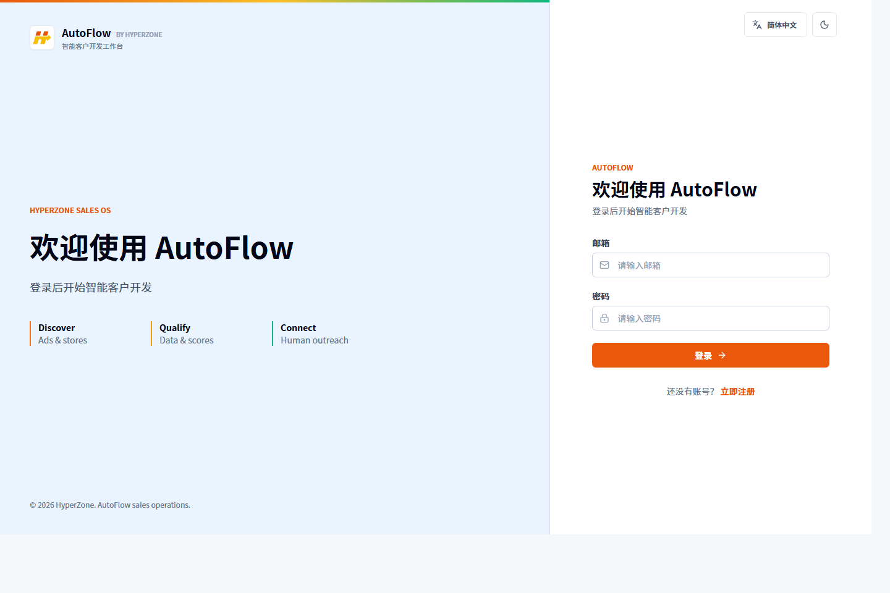
6.2 工作台与导航
左侧菜单依次为工作台、搜客工作流、客户线索、客户建联、客户报价、跟进与移交；个人设置和系统管理位于底部。顶部提供新建工作流、语言、主题和用户菜单。
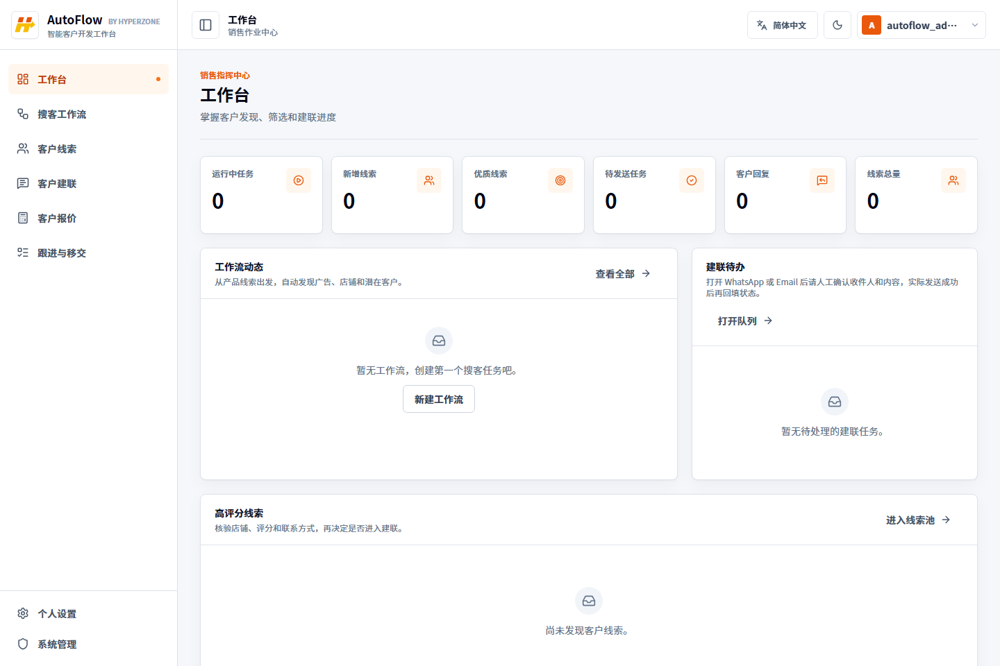
6.3 语言、主题与移动端
- 单击顶部“简体中文 / English”选择器，界面立即切换语言。
- 单击月亮或太阳图标，在白色与黑色主题之间切换。
- 选择结果保存在当前浏览器，下次访问自动恢复。
- 移动端单击左上角导航按钮打开菜单，单击灰色遮罩关闭。
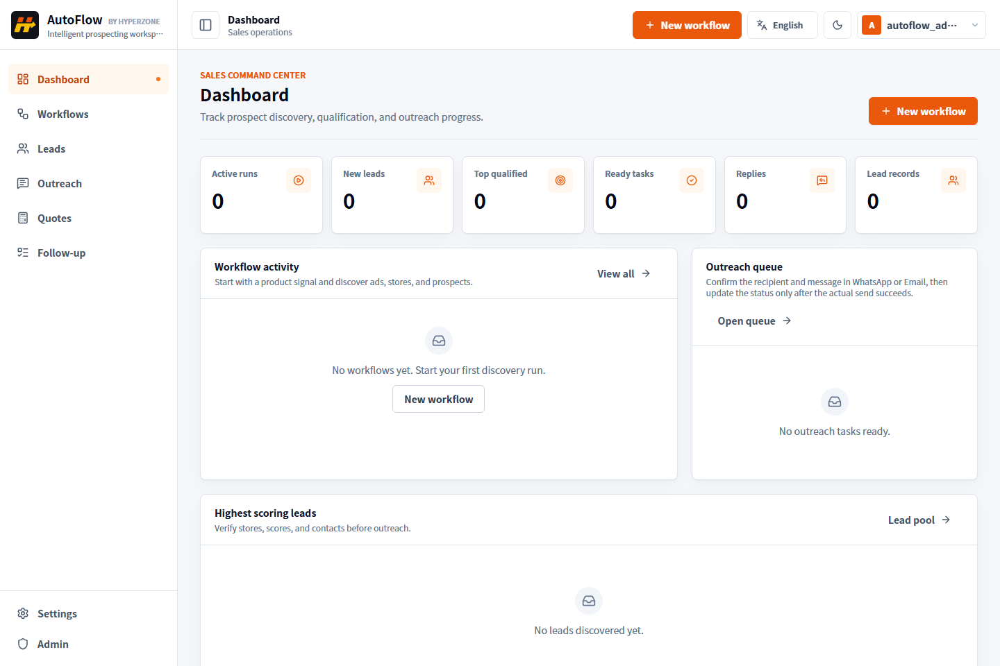
截图主题说明为确保屏幕阅读和打印清晰度，本手册全部操作截图统一使用浅色主题。系统仍支持深色主题，可通过顶部主题按钮随时切换。
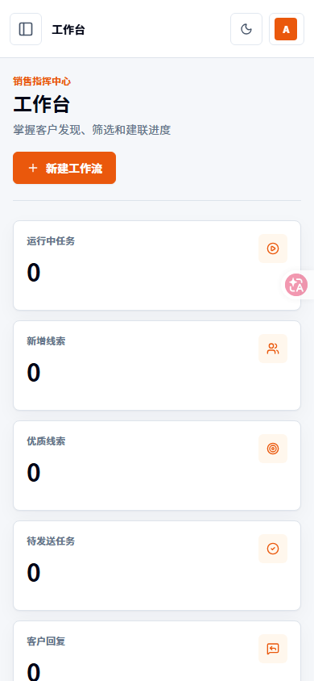
07创建与执行搜客工作流
7.1 新建工作流
- 进入“搜客工作流”，在工作流面板中单击“新建工作流”。
- 填写工作流名称，建议采用“市场 + 品类 + 日期”。
- 选择“产品关键词”或“产品图片”。图片模式必须填写无需登录即可访问的公开图片 URL。
- 填写英文关键词或图片地址，并从国家卡片中选择一个主要目标市场。
- 单击“创建工作流”。此时仅创建任务定义，尚未调用外部数据源。
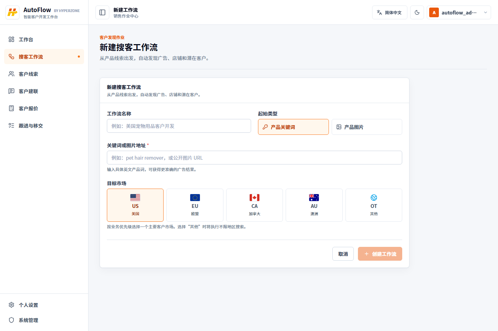
7.2 字段填写建议
| 字段 | 要求 | 示例 |
|---|---|---|
| 工作流名称 | 选填但建议填写，便于后续识别 | US Pet Hair Remover 2026-07 |
| 起始类型 | 产品关键词或产品图片二选一 | 产品关键词 |
| 关键词或图片地址 | 必填；关键词尽量具体，图片 URL 必须公开 | pet hair remover |
| 目标市场 | 必填；按优先级选择 US、EU、CA、AU 或 OT。OT 表示不限地区搜索 | US · 美国 |
7.3 启动与重试
- 进入“搜客工作流”，找到状态为“草稿”的任务。
- 核对名称、起始线索和目标市场，单击“开始发现”。
- 执行中不要重复点击，等待状态由“执行中”变为“已完成”。
- 完成后进入“客户线索”查看结果。
- 失败时先排查额度、网络、关键词或图片 URL，再单击“重新执行”。
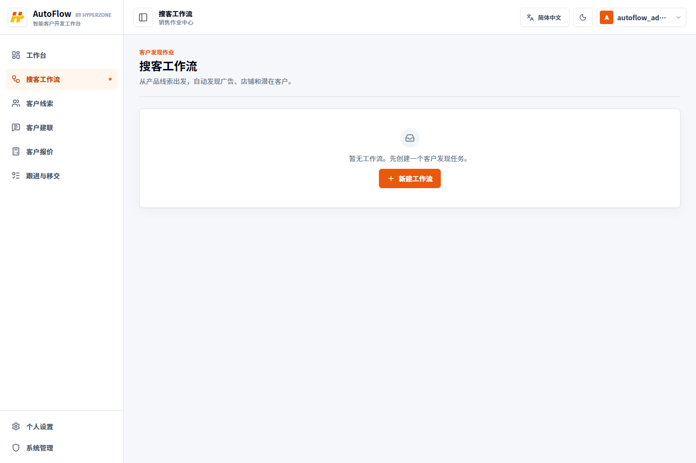
已验证的外部错误PipiAds 返回
442 表示 credits 不足；智谱返回 1113 表示余额或资源包不足。系统会明确失败，不会用模拟数据伪装成功。08线索筛选与联系人核验
8.1 在线索池快速筛选
- 进入“客户线索”。
- 按品牌、域名、市场或品类搜索。
- 使用状态筛选查看新线索、已筛选、已建联、已回复、商机、已成交或已流失线索。
- 优先查看综合评分较高且联系人证据完整的线索。
- 单击品牌名称进入客户详情。
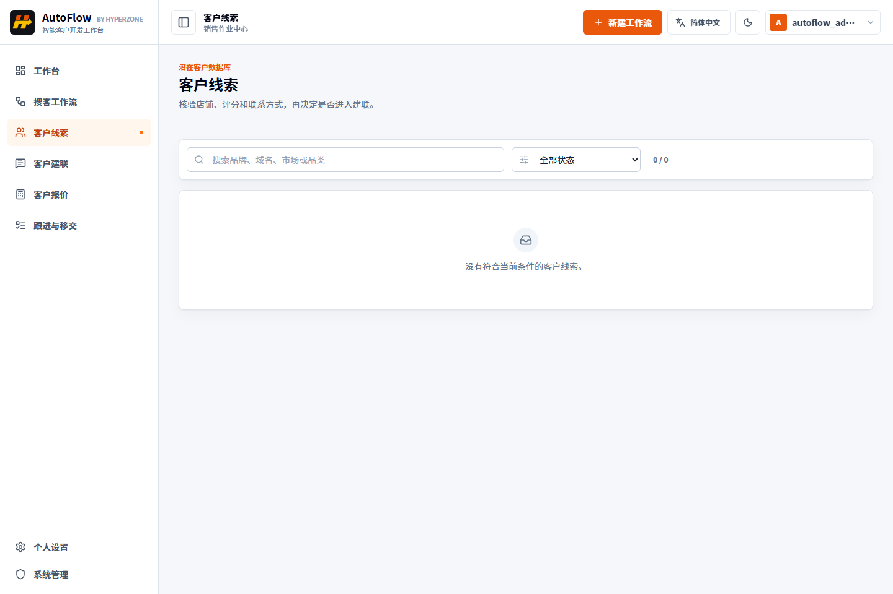
8.2 详情核验要点
- 打开店铺链接，确认域名仍可访问且与目标品牌一致。
- 查看 Shopify 置信度、广告活跃度、流量和联系人子评分。
- 单击证据来源，确认邮箱、WhatsApp 或社媒账号属于目标店铺。
- 优先使用“已验证”或高置信度联系方式。
- 广告代理、平台客服、第三方目录或失效页面不得当作客户联系方式。
评分的正确用法评分用于排序和辅助判断，不替代人工核验。高分线索也可能因为联系方式过期、店铺变化或来源错误而不适合发送。
09AI 话术与半自动客户建联
9.1 生成并审核话术
- 在线索详情确认客户画像、推荐切入点和联系方式证据。
- 单击“生成话术”，系统调用智谱 GLM-5.2。
- 检查客户称呼、产品匹配、语言、价格、库存、物流时效和合作承诺。
- 直接编辑生成内容，删除无法验证的事实。
- 确认后单击“审核通过，进入建联”，任务状态变为“待发送”。
9.2 外部发送与状态回填
- 进入“客户建联”，选择“待发送”。
- 再次核对渠道、联系人、主题和消息正文。
- 单击“打开 WhatsApp / Email”，在外部页面人工确认并发送。
- 真实发送成功后返回 AutoFlow，单击“标记已发送”。
- 收到客户回复后单击“标记已回复”；不适合发送的任务选择“跳过”。
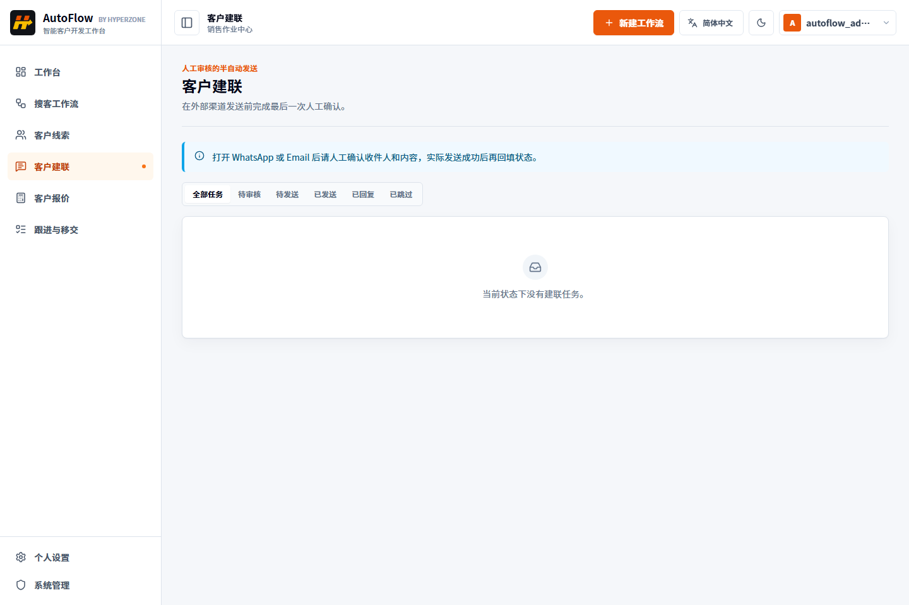
禁止误操作“标记已发送”只是状态回填，不会代替外部渠道真实发送。没有在 WhatsApp 或 Email 中确认成功时，不得点击。
10客户报价工作区
10.1 产品阶梯报价
- 从左侧“客户报价”进入，或在线索详情单击“准备客户报价”。
- 填写 FOP 商品 / SKU 编码，选择单位和币种。
- 为每个数量区间填写最小数量、最大数量和客户单价。
- 单击“增加阶梯”扩展价格区间，确保相邻阶梯不重叠。
- 最后一个阶梯可以不设置最大数量，表示不封顶。
10.2 目的国与包裹条件
- 勾选一个或多个目的国。
- 填写包裹数、重量、重量单位、长、宽、高和尺寸单位。
- 检查综合报价矩阵是否生成每个“数量阶梯 × 目的国”组合。
- 完成字段校验后单击“保存草稿”，后续修改会生成新版本。
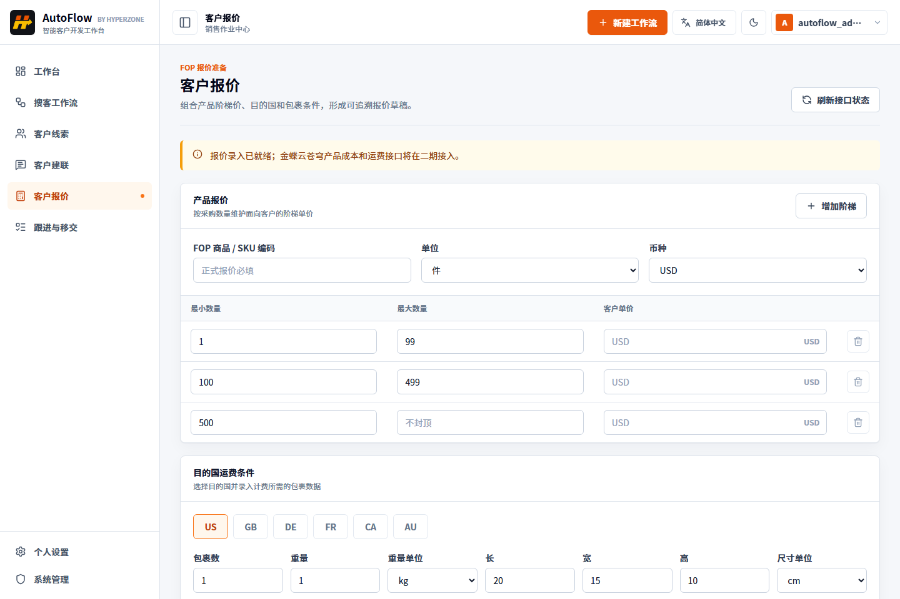
10.3 阶梯校验规则
| 规则 | 正确要求 |
|---|---|
| 最小数量 | 必须是大于或等于 1 的整数。 |
| 最大数量 | 不得小于最小数量；除最后一阶外应填写。 |
| 区间关系 | 相邻阶梯不能重叠。 |
| 客户单价 | 每个阶梯均应填写大于 0 的金额。 |
| 目的国 | 至少选择一个。 |
| 包裹数据 | 包裹数、重量和三边尺寸必须大于 0。 |
报价版本含义“草稿保存成功”只代表报价输入条件已固化，不代表已经取得 FOP 成本或物流运费。不得把“等待 FOP”或空白金额当作客户最终报价。
11跟进状态与 FOP 移交
“跟进与移交”页面汇总 AutoFlow 内部的新线索、已筛选、已建联、已回复、商机、已成交、已流失和无效状态。它用于移交前的快速查看，不是第二套完整 CRM。
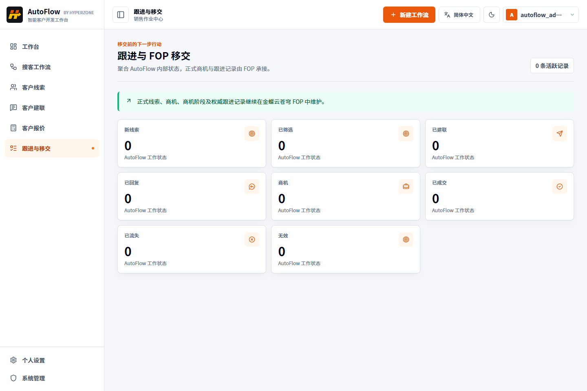
移交成功判定
- 当前一期中 FOP 按钮属于接口位置预留，适配器不可用时不能判定移交成功。
- 二期上线后，应以 FOP 返回的线索 ID、商机 ID 和同步状态为准。
- 超时或失败时保留 AutoFlow 草稿和请求条件，通过幂等键重试，不能重复创建正式客户。
- 移交后以 FOP 商机阶段和跟进记录为业务权威数据。
12个人设置与系统管理
12.1 个人设置
- 进入“个人设置”。
- 可修改用户名；邮箱当前不可修改。
- 单击头像上传 JPG、JPEG、PNG、GIF 或 WebP，文件最大 5 MB。
- 在“界面偏好”中切换语言和显示主题。
- 数据管理可导出兼容层业务记录 PDF；导入功能仍在开发中。
- 公共电脑使用结束后单击“退出当前账号”。
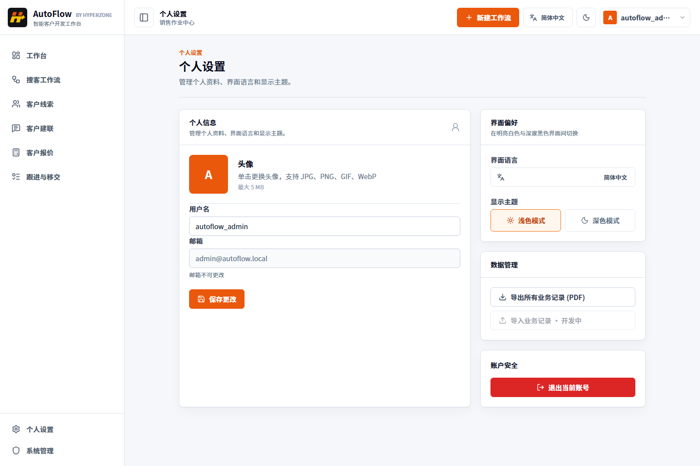
12.2 管理员页面
只有管理员能进入“系统管理”。当前页面管理原系统兼容层业务记录，可按标题或作者搜索、按表头排序、预览安全过滤后的内容及删除记录。
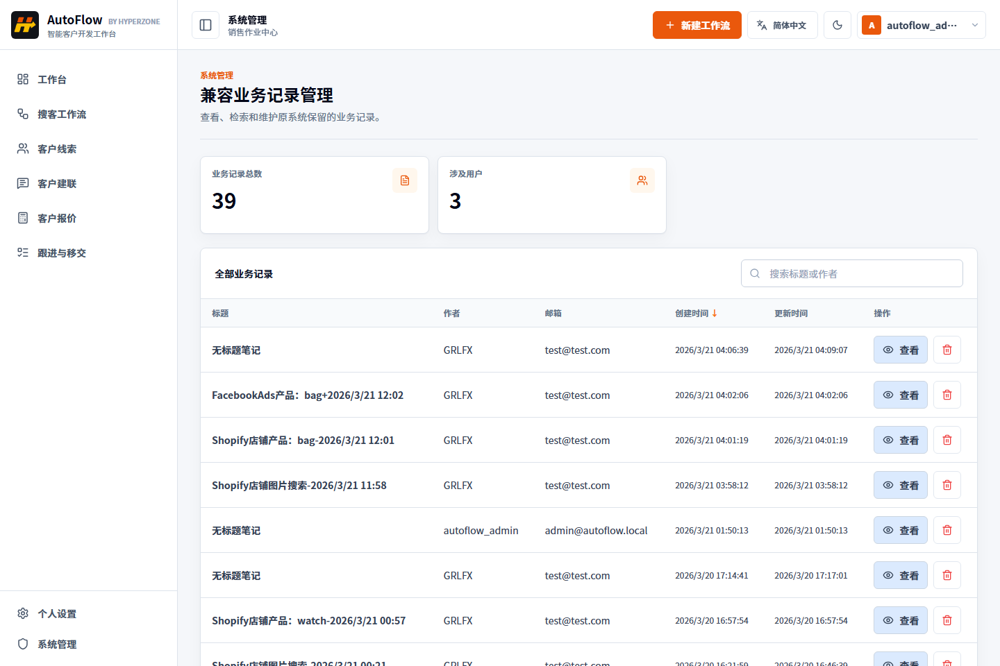
13状态字典
13.1 工作流状态
| 状态 | 含义 | 下一步 |
|---|---|---|
draft | 已创建，尚未执行 | 核对参数后开始发现。 |
running | 正在调用外部能力并处理证据 | 等待完成，不要重复提交。 |
completed | 执行完成 | 进入客户线索查看结果。 |
failed | 执行失败 | 排查外部额度、网络和输入后重试。 |
cancelled | 已取消 | 根据需要重新创建。 |
13.2 线索与建联状态
| 对象 | 状态顺序 | 说明 |
|---|---|---|
| 线索 | new → qualified → contacted → replied → opportunity → won/lost | invalid 表示不应继续跟进。 |
| 建联 | draft → ready → sent → replied | 也可以进入 skipped 或 failed。 |
| FOP 同步 | not_started → pending → succeeded | 异常进入 failed 或 requires_review。 |
14排障与安全规范
14.1 常见问题
| 问题 | 排查方法 |
|---|---|
| 页面打不开 | 确认前端端口 5173、后端端口 3000、数据库和启动日志。 |
| 登录失败 | 使用邮箱登录，检查密码大小写、后端健康状态和账号是否存在。 |
| 工作流没有线索 | 检查状态、PipiAds credits、英文关键词、目标市场和图片 URL 可访问性。 |
| AI 话术无法生成 | 检查智谱 API Key、GLM-5.2 权限、余额、资源包和频率限制。 |
| FOP 报价按钮不可用 | 当前为预期行为；真实产品成本和物流运费适配器计划在二期接入。 |
| 列表为空 | 先切换到“全部”状态，再确认上游工作流是否已完成。 |
14.2 安全规范
- 不得在前端、截图、日志、聊天或 Git 仓库暴露 API Key。
- 不共享个人账号，不把管理员账号用于日常销售。
- 所有联系人必须经过证据核验，建联应符合 B2B 合规要求。
- AI 内容必须人工审核，不发送虚构价格、库存、时效和案例。
- 管理员删除数据前必须二次确认。
- 对外报价必须经过真实成本、运费和内部审批确认。
15验收检查清单
- 普通用户可以登录，且看不到系统管理菜单。
- 管理员可以进入系统管理页面。
- 简体中文与英文可即时切换并保持。
- 白色与黑色主题可切换并保持。
- 桌面侧栏可收起，移动端导航可打开和关闭。
- 可以创建关键词和图片 URL 工作流。
- 失败工作流可以重新执行。
- 线索可以搜索、筛选并查看证据。
- 智谱额度充足时可以生成并编辑话术。
- 建联状态可按合法顺序流转。
- 外部发送必须经过人工确认。
- 报价页能校验阶梯、目的国和包裹。
- 报价草稿可保存新版本。
- FOP 未接入时不会显示伪造成本或运费。
验收完成标准功能行为、页面状态和数据边界均与本手册一致；任何依赖付费外部服务或二期 FOP 接口的步骤，应单独记录环境前提，不能以空数据或模拟结果替代真实联调结论。